Introduction
Revolutionizing Social Media Analytics:
How Machine Learning is Transforming the Way Brands Connect with Consumers.
The use of Machine Learning (ML) in social media has become a hot topic in recent years, with institutional entities exploring the ways in which these technologies can help them better understand, segment, and organize the vast amounts of data they collect daily. The ethical as well as unethical use of social media analytics has helped steer the common public towards estimated paths in recent years. Even though there is uncertainty surrounding AI and machine learning after new global data privacy legislation, its potential benefits cannot be underestimated and more importantly it has never been more significant.
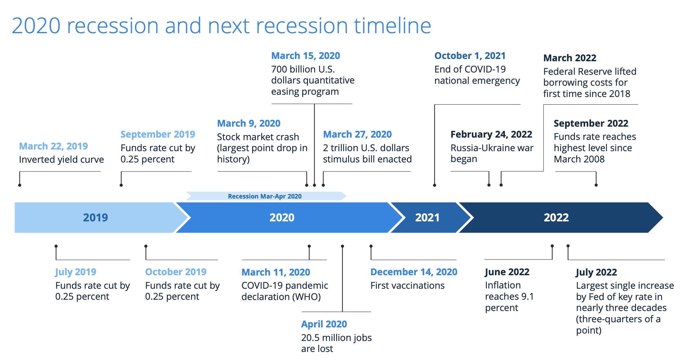The late 2022 period saw a spike in usage of Twitter hashtags “CFBR”, “laid off”, “jobsearch”, and similar horrific sounding phrases. Public sentiment erupted due to a combination of world-strucks such as the Covid-19, the Russian War, and then, when the world appeared to be on the verge of a silver lining, the recession blanketed the world, especially the US market. In the midst of all the chaos, Apple successfully launched its latest series of iPhones, iPads and Macbooks. Financial institutions such as Morgan Stanley and Capital One reported quarterly profits and continued their hiring efforts, while controversial players with their emotionally charged reputations like Goldman Sachs struggled with faltering attempts to develop a stream of steady, repeatable revenue in stark contrast to its rival’s resilience in asset management.
A critical question arises as to how they could be sure it wouldn't turn out to be a critical misstep?
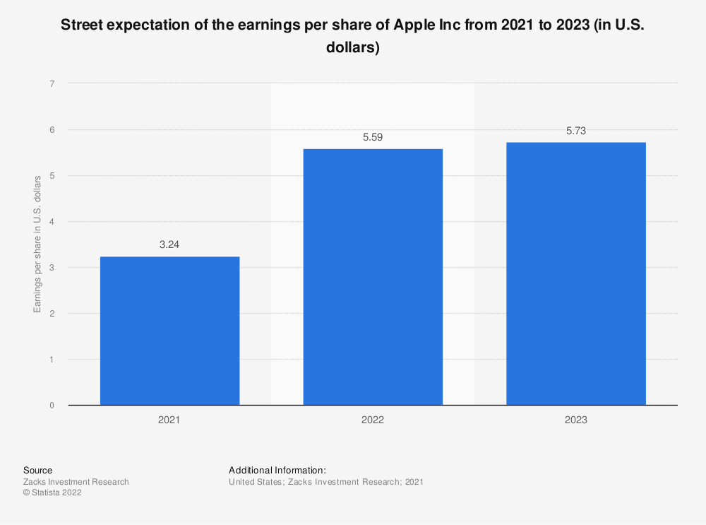According to Bloomberg's interview with Apple's Supply and Delivery Chain Lead in July 2022, it was confirmed that the iPhone 14 supply chain was not impacted by geopolitical tensions or financial concerns. This was determined through sentiment trend analysis and engagement-reach charts, ensuring the launch event would not be delayed. Morgan Stanley and Capital One's human-centered approach, rational client management, and empathetic dealings with employees might have safeguarded them from suffering losses. These occurrences raise the need for thoughtful reflection on the ethical utilization of social media data from sources such as Twitter and Facebook.
Twitter, a microblogging platform, has repeatedly been shown to be an effective communication tool for both corporations and governments. It has become increasingly important for businesses to engage with their customers, while governments are able to connect with the public on a more personal level. As a result, the data generated on Twitter has become a valuable resource for organizations looking to make informed decisions and improve their performance.
By utilizing Twitter data, organizations, governments, and NGOs can gain a greater understanding of public reactions, engagement, and anticipate the impact of future marketing campaigns, thereby allowing them to identify new opportunities for growth and success.
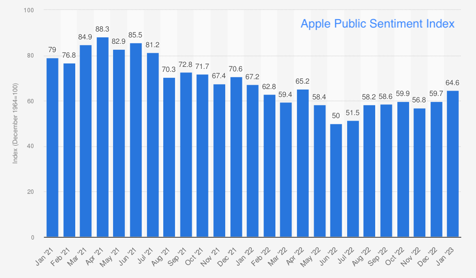
The objective of this project is to design and execute a comprehensive solution for utilizing Twitter data in the domains of customer service, influencer identification, and event tracking. The solution encompasses the entire process, from pipeline creation, data gathering, to automated deployment for user interaction. The project endeavors to create a dynamic dashboard that integrates and visualizes relevant Twitter data in a generic form. This aggregated information provides real-time insights into critical metrics, including sentiment analysis, reach identification, engagement segmentation, and location-specific trending terms such as related to University of Colorado Boulder (CUB). The interactive dashboard will give a complete overview of the students' experiences, including things to observe, opinions on new policies, expressions of gratitude, and response to alerts, sporting reactions, making it simpler to understand and take action based on important insights.
In summary, the project aims to aid CUB in making informed decisions, measuring campaign effectiveness by providing a rich insightful representation of students and staffs response. Also the project would try to answer the following questions:
1). What ethical issues have arisen with the use of social media analytics?
2). What were the burning issues in CU Boulder trending on Twitter in 2022-23?
3). What all kind of information could the dynamic dashboard provide?
4). Can the dashboard provide real-time insights?
5). What metrics will be included in the sentiment analysis?
6). How will the dashboard provide location-specific trending terms?
7). How will the project measure the effectiveness of campaigns at the CU Boulder?
8). What type of information will the project provide about CU Boulder's students and staff?
9). What role does sentiment trend analysis play in ensuring product launches are not delayed?
10). How does the dashboard provide a complete overview of the experiences of students at CU Boulder?
Requirements
The complete Python code along with datasets used and flat files could be found here!
For the scope of the project, here are the two necessary setup files required to run the project code:
1. Python Requirements: Requirements.txt
2. Anaconda Environment virtual_environment.yml
Project Snapshot ::
- Topic: How Machine Learning is Transforming the Way Brands Connect with Consumers
- Version: 1.2
- Language: Python 3.8.0
Data Collection
Published
2 Feb 2023
Read Time
10 Mins
Version
1.0
Twitter is a popular social media platform that is widely used for communication, information sharing and entertainment. As a result, there is a significant amount of data generated on the platform every day. Methods of Data Gathering:
1. Twitter API (discontinued from Feb 1, 2023): Using a developer account the Twitter API provides a way to access Twitter data in a programmatic way.
2. Scraping: Web scraping is another method of data gathering, and this project uses one such tool, snscrape. This project utilizes a wrapper around this tool to extract thousands of tweets in an iterative manner.
3. Third-party tools: There are several third-party tools such as Hootsuite, TweetDeck, and Socialbakers that can be used to gather data from Twitter.
The wrapper code used to extract twitter data using the API tool could be found here.
The process of collecting data began with a review of the literature and examination of various sources, including the developer API and Kaggle. However, since the scope was limited to the University of Colorado Boulder, specific Twitter metadata was required. To address this, the snscrape tool was utilized. SNScrape API accesses the archived Twitter repository through asynchronous ten-fold developer accounts obtained over time. It provides a powerful search query that can be passed to the endpoint call, but the user does not need any API key. The returned JSON object contains several meta-data information that could be mined.
For the purposes of the project, a wrapper was created to make data retrieval easier, returning only the necessary attributes in a list form. The request body that could be used for the original endpoint looked like:
"{search_query} since:{YYYY-MM-DD} until:{YYYY-MM-DD}"
Example of a sample POST request made via the original tool:
import os
import pandas as pd
#!pip install git+https://github.com/JustAnotherArchivist/snscrape.git
import snscrape.modules.twitter as sntwitter # the magic
# API POST message body
search_query = "cuboulder"
start_date = "2022-12-01"
end_date = "2022-12-03"
message_body = '{} since:{} until:{}'.format(search_query, start_date, end_date)
print(message_body)
# returns a generator with json response
historical_metadata_raw = sntwitter.TwitterSearchScraper(message_body).get_items()
historical_metadata = [tweet for tweet in historical_metadata_raw]
The above sample API request would generate an output like:
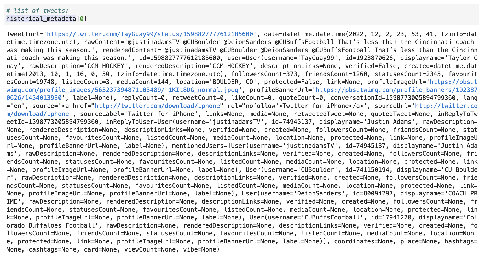The extensive code for retireving project-related tweets for complicated search queries could be found in the wrapper code linked above. The parsed JSON was stored as a CSV file, and the final raw dataset consisting of Twitter's historical meta-data used for the project had following associated attributes:
- Dataset Type
- - Dataset type: Record Data
- - Dataset build: Created on the fly using API
- Dataset Configuration
- - Number of records: 3430
- - Number of columns: 14
- - Start Date of dataset: 2020-01-01
- - Last Date of dataset: 2022-12-31
- Label Configuration
- - Annotated/Labelled: YES
- - Number of labels: 7
- - Usecases: Supervised, Semi-supervised, Unsupervised
- Data Contents
- Tweets: These contain text, images, and links, and can be used to gather information on topics, trends, and opinions.
- User Profiles: Information about the account owner, such as name, location, and bio which can be used to understand the demographics of the audience and target market.
- Followers and Friends: This data can be used to understand the social connections and relationships between users on the platform.
Data Preprocessing and Exploratory Data Analysis
Published
3 Feb 2023
Read Time
45 Mins
Version
1.1
01
OVERVIEW
Data preprocessing is a crucial step in the analysis process, as it helps to ensure that the data is in a format suitable for analysis and eliminates any errors. For the scope of this project, data preprocessing was critically important to ensure the reliability and accuracy of the twitter meta-data.
The data obtained contained several irrelevant information, duplicates, and inconsistencies in the format, which could have affected the results.
To address this, the data was thoroughly cleaned, transformed, standardized, tokenized and vectorized. This also involved removing irrelevant information, dealing with missing values, and handling outliers such as tweets containing only hashtags, (or anomalies).
Download the raw dataset
DOWNLOADDownload the processed dataset
DOWNLOAD![]()
The E DA and Preprocessing code can be downloaded from here
02
process
01
Loading Packages
For the scope of the project, here are the two necessary setup files required to run the project code:
1. Python Requirements: Requirements.txt
2. Anaconda Environment virtual_environment.yml
A lot of generic and specific resouces were required to run the project. A general directory architecture for the project setup looked like:
Contents of Resources directory could be found here.
Spacy English Large Model Version 3.5.0 (en_core_web_lg-3.5.0) could be installed and download from here.
Sentence Bert Transformers (all-distilroberta-v1) model could be loaded from here.
The original dataset consisted of 13 features and 1 label set. Timestamp were parsed into daily, monthly and yearly bins for visualization purposes.
These represent some of the statistical insights for numerical features:
03
Feature Segmentation
The feature set was categorized into categories such as: temporal, text, boolean, identifier, quantitative.
The labels were heavily unbalanced and the minority classes were too low in count.
To prevent fitting problems, the minority classes were binned into "cu_others" unified label.
Finally the dataset was represented by three labels which were still heavily unbalanced but could be worked upon using re-sampling techniques.
Over the years, the number of influencers and Official Public Handles tweeting using some of the terms related to CUBoulder such as Football, Basketball, Online, etc have reduced. This could be primarily due to the factor that most of the tweets belong to students and staff members, and since the hottest topic for the two years was "Research" this drop was expected.
Also there could be less activity from official public handles such as CUBoulder, CUEngineering, etc.
However, in the research wing, it could have been plausible that not many recognized or verified researchers were tweeting during the lockdown period.
It could be much precise to visualize trending #Hashtags across these years.
Some of the most active verified Twitter handles could be found alongside in the chart.
CUBoulder and CUEngineering were found to be the top handles, while some verified individual account holders have been tweeting about CU Boulder too.
CUEngineering, CUBoulder and EarthLabCU seem to be the most frequent domains tweeting during the considered timeline.
Out of the top three public handles, CUEngineering, CUBoulder had a verified status (Blue tick) but EarthLabCU didn't have - a good pointer for CU Team to look into!
The first two could have been predicted, but it was interesting to note EarthLab at CU being the third most active domain during the considered two years.
Could the tweets be about Covid-19 given the time-period of 2020-2022 considered?
Were there some innovative ideas or recognized researches happening in the Earth Lab?
These were the top twitter users having the most reach and could have been tracked as potential key influencers, in a more generic sense.
Users such as "Mitchellbyars" and "ShellyMBoulder" seems to have a good following and their each tweet reaches about 33 people, which infact is great when compared to small active user-base.
"Research", "Covid19" and interestingly "Python" were some of the most common trending #Hashtags used over the two year period.
05
Multivariate Analysis
As expected, Like-Count, Reply-Count, and Retweet-Count were found to be quite correlated.
Contrast to common belief, User-Followers-Count was found to be not at all correlated to the above three metrics.
The average number of followers (following account-owners) was a more wide-spread (bi-modal) and possibly counted for famous personalities.
The average number of people these twitter account-owners represented a more common and expected normal distribution (skewed) curve, since some handles would be following a lot more people as compared to few reserved handles.
Surprisngly, the number of tweets went down over the the two years.
However, the number of retweets and likes ten folded. It could have been due to recent events such as CUBuff Football team's poor performance and onboarding of Coach Prime Deion Sanders.
Events like transfers, ground-breaking research, alerts could have polarized the public sentiments.
06
Missing Values
The feature set was categorized into categories such as: temporal, text, boolean, identifier, quantitative.
Based on above analysis, following pre-processing measures were considered for textual data:
- Unicoding
- Short-Text Twitter Tokenization
- Expanding Contraction words
- Language Detection
- Lemmatization/Stemming
- Parts of Speech Tagging
- Stopwords removal
- Special characters removal
- Emojis removal
- Emoticons removal
- Weblinks removal
- Quick fixing of mis-spelled words (lexicon)
- Custom vocabulary creation and retention from removal
- Regular Expressions parsing
- Anchor text removal
- Hashtags parsing
- Greeting, salutation keywords removal
Here's how the preprocessing pipeline performed, a comparison between bag-of-words before and after executing preprocessing.
- Dimensions of dataset before preprocessing: (3430, 14)
- Dimensions of dataset after preprocessing: (3394, 22)
Sentence Bert Transformers sBert was used for vectorizing processed tweet text into meaningful embeddings.
 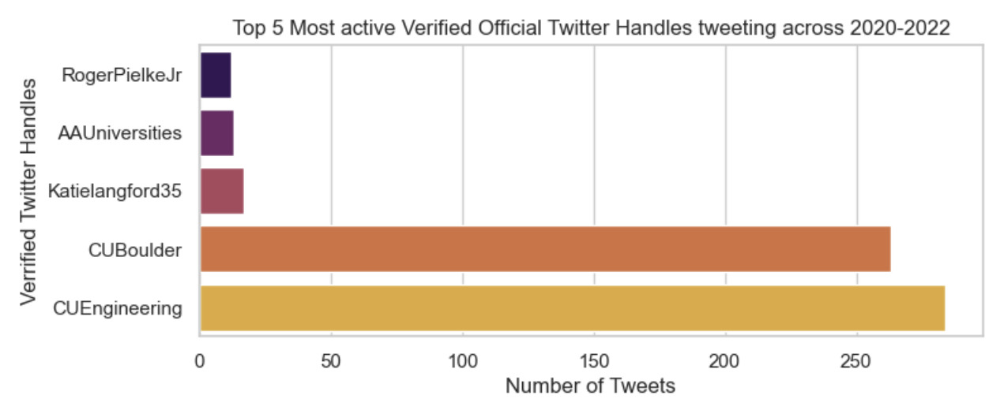
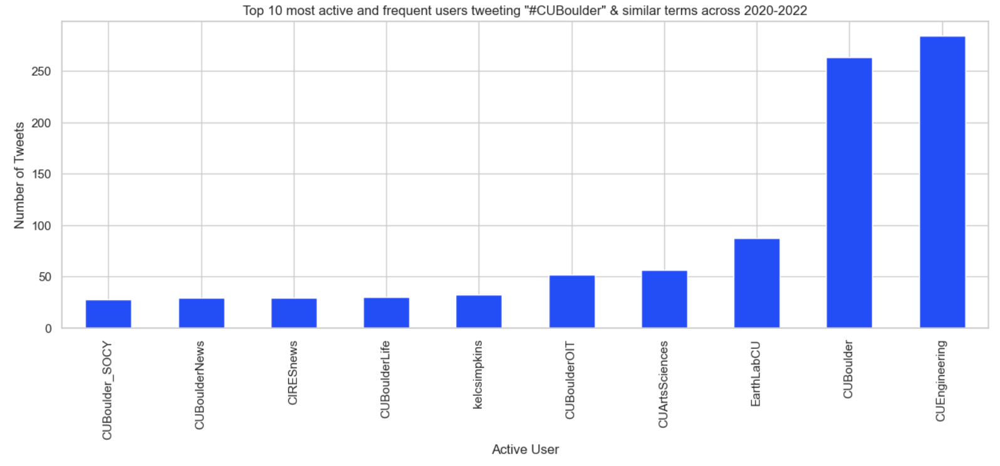
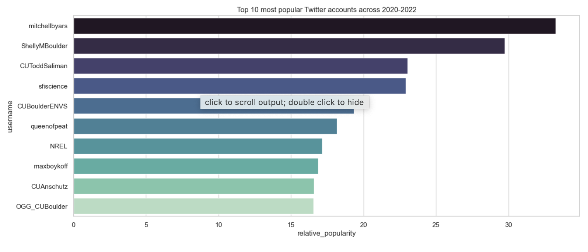
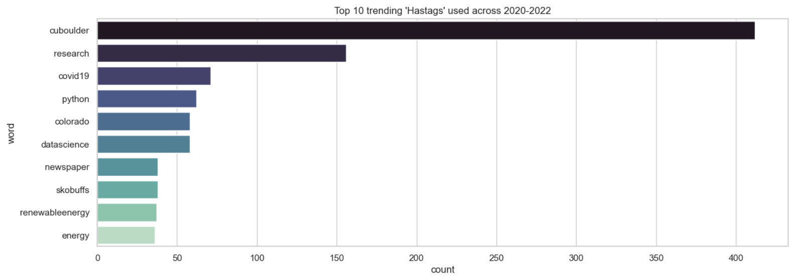
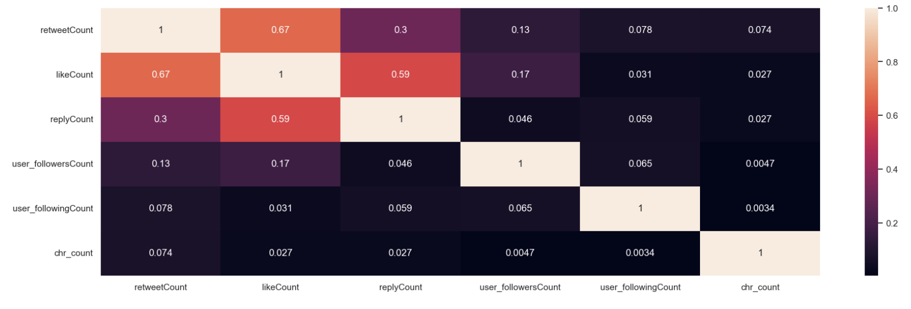
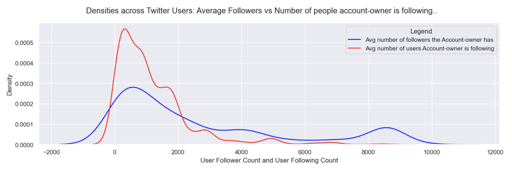
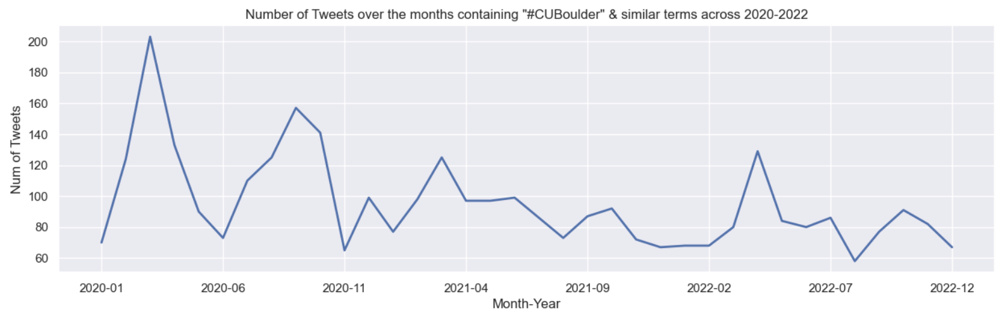
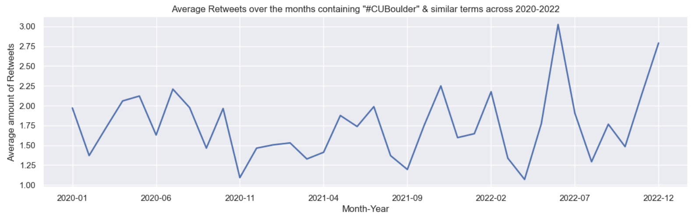
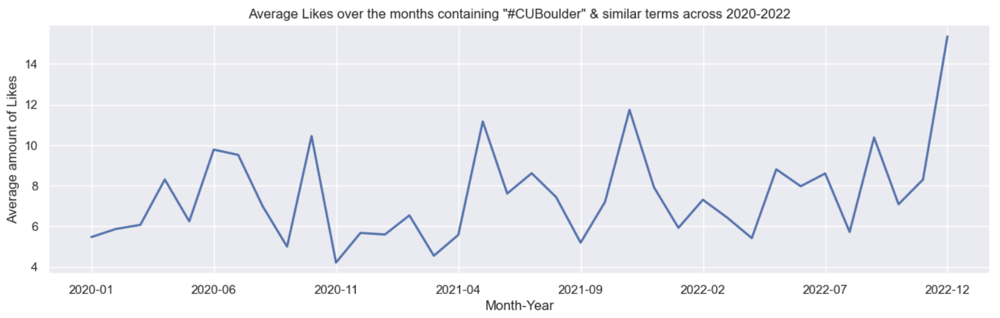
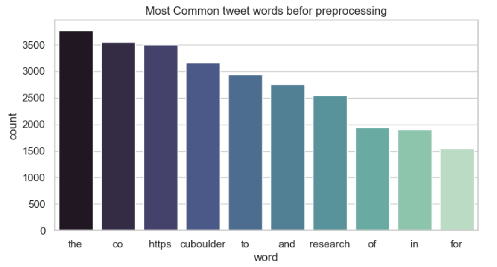
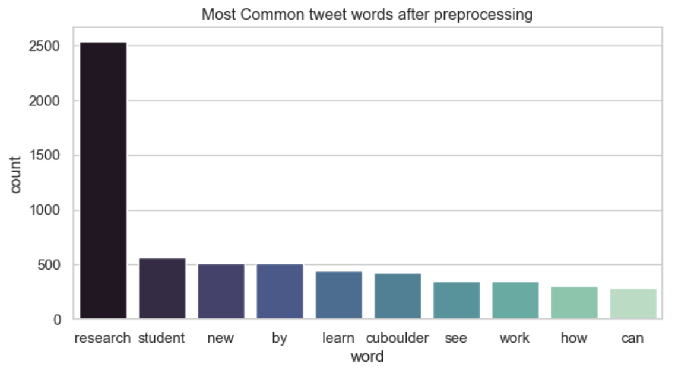
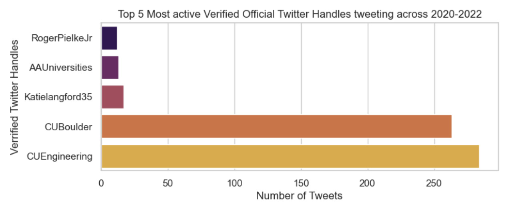
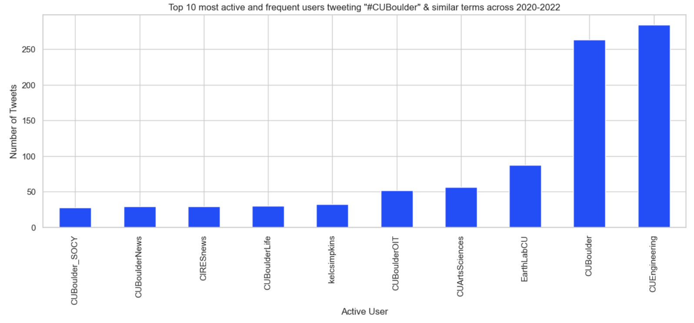
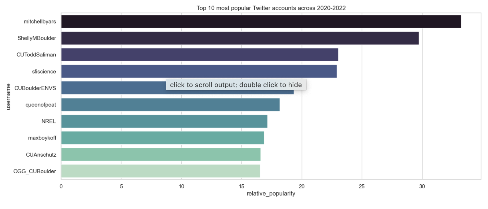
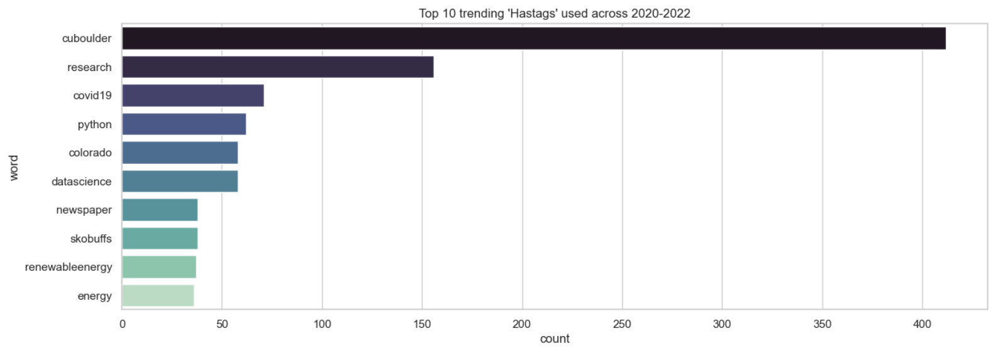
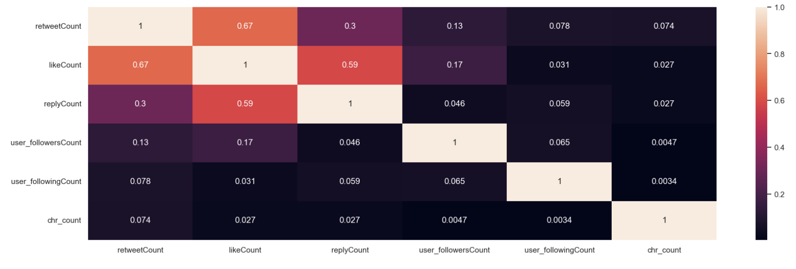
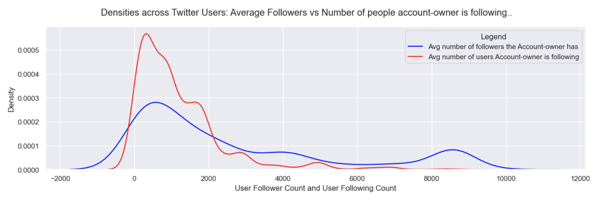
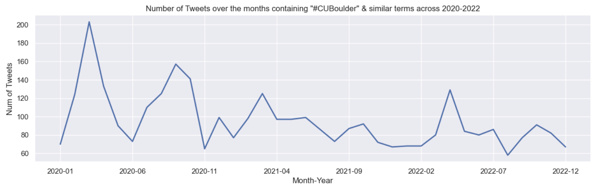
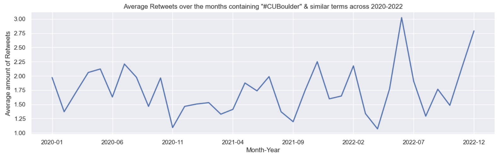
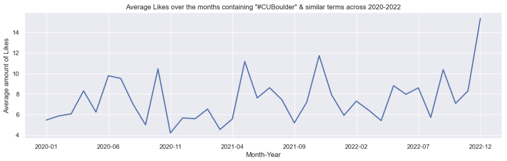
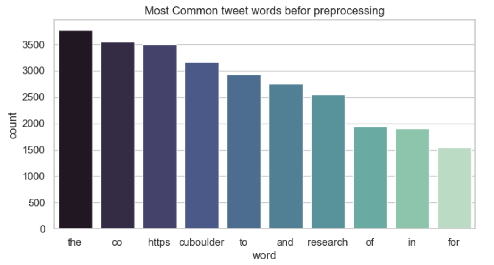
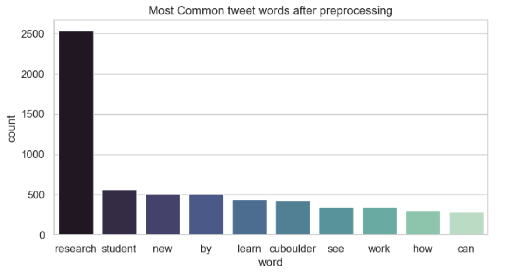
Principal Component Analysis and Visualization using t-SNE
Published
21 Feb 2023
Read Time
35 Mins
Version
1.0
01
OVERVIEW
Principal components analysis (PCA) refers to the process by which principal components are computed, and the subsequent use of these components in understanding the data.
PCA is an unsupervised approach, since it involves only a set of features 𝑋1,𝑋2,...,𝑋𝑝, and no associated response 𝑌.
When there are large number of features which may be correlated with each other (pair-plot), principal components analysis (PCA) allows us to summarize this set with a smaller number of representative variables that collectively explain most of the variability in the original set.
Apart from producing derived variables for use in supervised learning problems, PCA also serves as a tool for data visualization (visualization of the observations or visualization of the variables). It can also be used as a tool for data imputation — that is, for filling in missing values in a data matrix.
The code for implementing PCA by hand is here
Clustering Algorithms
Published
2 Feb 2023
Read Time
15 Mins
Version
1.0
01
OVERVIEW
Clustering is an unsupervised machine learning technique, which partitions the entire dataset into a fixed number of clusters or groups in such a way that observations in each group exhibit similar behavior or characteristics and are homogeneous. The observations in the same group are more similar than the observations in other groups.
What is Clustering ?
Clustering is an unsupervised machine learning technique, which partitions the entire dataset into a fixed number of clusters or groups in such a way that observations in each group exhibit similar behavior or characteristics and are homogeneous. The observations in the same group are more similar than the observations in other groups.
Clustering Algorithms:
Based on the type of clustering algorithm used, there are different types of clustering methods:
- Hierarchical clustering: It is a tree based clustering method where the observations are divided into a tree like structure using distance as a measure.
- Centroid based clustering: In this method, the observations are partitioned into a predefined number of clusters (k) such that within cluster variances is minimum. k-means clustering is the most commonly used centroid based clustering algorithm.
- Density-based clustering: In this method, the observations are grouped together based on density of points that are closely packed. DBSCAN and OPTICS are two popular density-based algorithms.
- Distribution-based clustering: In this method, the observations are grouped based on the distribution models and observations in the same cluster are most likely coming from the same distribution. Gaussian mixture algorithm is an example of Distribution-based clustering.
How similarity is measured?
Similarity is computed using some form of distance matrix, in linear or non-linear space. Some distance metrics which are commonly used are:
Minkowski distance
calculates the distance between two real-valued vectors. It is a generalization of the Euclidean and Manhattan distance measures and adds a parameter, called the “order” or “p“, that allows different distance measures to be calculated.
Cosine similarity is used to determine the similarity between documents or vectors. Mathematically, it measures the cosine of the angle between two vectors projected in a multi-dimensional space. Cosine similarity says that to find the similarity between two points or vectors we need to find Angle between them.
Levenshtein distance, like Hamming distance, is the smallest number of edit operations required to transform one string into the other. Unlike Hamming distance, the set of edit operations also includes insertions and deletions, thus allowing us to compare strings of different lengths.
Given two strings, the Levenshtein distance between them is the minimum number of single-character edits (insertions, deletions, or substitutions) required to change one string into the other.
When there are large number of features which may be correlated with each other (pair-plot), principal components analysis (PCA) allows us to summarize this set with a smaller number of representative variables that collectively explain most of the variability in the original set.
Apart from producing derived variables for use in supervised learning problems, PCA also serves as a tool for data visualization (visualization of the observations or visualization of the variables). It can also be used as a tool for data imputation — that is, for filling in missing values in a data matrix.
Clustering Algorithms by hand in python
02.1
k-means
01
Loading Data
The dataset consists of multiple features, but for the scope of clustering, this section focusses only on two features, "tweet", "and processed_tweet".
The pre-processed dataset consists of pre-processed tweets in English language.
These tweets needs to be vectorized into numbers.
Usually, word-embeddings are generated based on two architectures, which basically served the footprints of modern state-of-the-art networks.
This project uses "Distilled-Roberta-Version1" which has been fine-tuned on twitter-data by cardiffnlp. It's a fine-tuned pre-trained model based on original Roberta. It could be found: here
A snapshot of vectorized text (embeddings) has been depicted alongside. Each vector consists of 768 high-space dimensions.
Context
- In our dataset (tweets) each sentence have been vectorized into a vector of [1 x 768] dimensions.
- When we say that a text sentence is embedded into $768 \space dimensions$ by a pre-trained Transformer model, we mean that the sentence is **now represented as a vector of 768 numbers**, where each number in the vector corresponds to a different dimension in the embedding space.
- These dimensions were learned by the Transformer model during training and represent different aspects of the meaning and context of the sentence.
- For example, one dimension of the embedding vector might correspond to the presence of a certain topic or concept in the sentence, while another dimension might correspond to the sentiment or emotional tone of the sentence. By combining these different dimensions in a high-dimensional space, the Transformer model is able to capture the complex and nuanced meaning of a sentence.
03
Finding optimal K
K-Means algorithm was fitted on embedded data using a k-value from 2 to 100, to identify optimal k.
There's a elbow at around 50, and a steep dip in the silhouette score around the same mark, thus, optimal k was estimated to be 50.
It has been show, that text vectorized in high-space dimensions like sBert does, PCA tends to under-perform since understanding eigenvectors without the knowledge of underlying meaning of these 768 dimensions does not make sense.
Since its random tweets, PCA isn't able to explain much of variability in its Eigenvectors. But typically, around 100 dimensions are enough to explain about 80% variability in the data.
Dimensionality Reduction with t-SNEUsing t-SNE we can reduce our 768 high dimensional features vector to 2 dimensions!By using the 2 dimensions as x,y coordinates, the body_text can be plotted. t-SNE will attempt to preserve the relations of the higher dimensional data as closely as possible when shrunk to 2D. The similar article will thus be in closer proximity to each other..
t-SNE does a good job in preserving dimensional understanding.
Performing Hierarchal clustering with linkage ward and plotting a dendrogram reveals a lot of interesting clusters. The diagram shows which points are most similar and therefore should be grouped together. Another insight provided by dendrograms is the identification of outliers or anomalies in the dataset. In addition, dendrograms can provide insights into the optimal number of clusters to use in a clustering algorithm, which roughly equates to 50-60 here.
Text Clustering using a Basic technique
Text Clustering using an advanced Industry applied technique
Type of popular vectorizers
-
Tf-idf:
Used for small corpus where the vocabulary can be contained.
- class-Tf-idf: Enhanced tf-idf trained on Transformer encoder-decoder network, based on class-topics.
- Word2Vec: Good for starting with embeddings in smaller text sentences.
- Doc2Vec: Great option for vectorizing texts spanning across paragraphs.
- Glove/Google/Stanfordnlp: Pre-trained models for beginners.
- Spacy: Industry applied and one of the most used quick-vectorizers.
- Universal Sentence Encoder/FastAI: Google and Facebook trained embedders.
- Transformers: State-of-the-art embedding networks, based on encoder-decoder architecture.
- Transformers-fineTuned: Roberta, Sentence-Bert, CardiffNLP are some of the most widely used deep learning embedders.
t-SNE Dimension Reduction for visualization without K-Means labels
t-SNE Dimension Reduction for visualization with predict K-Means labels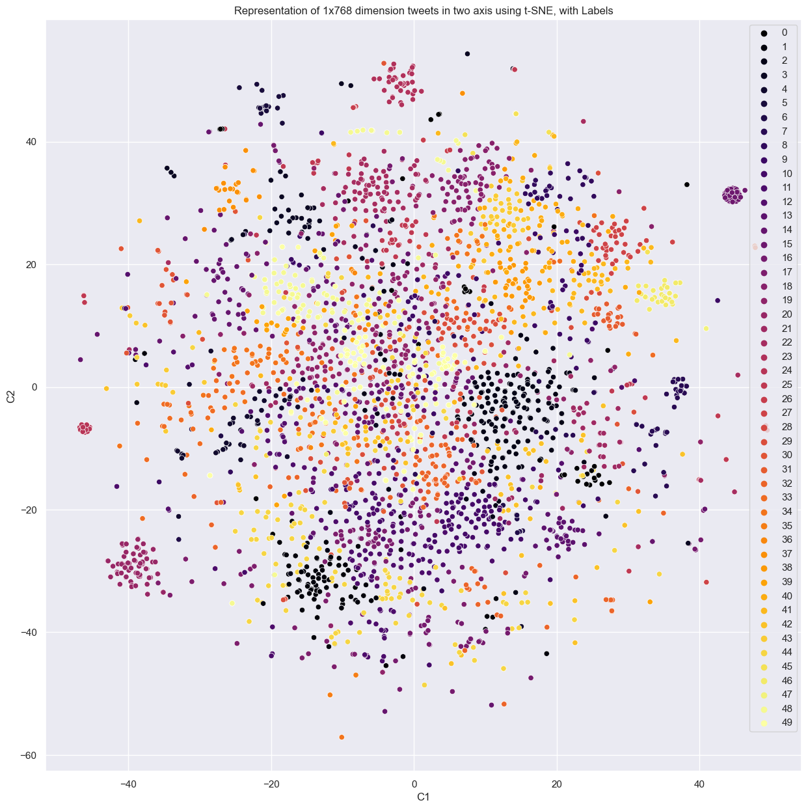
02.2
Hierarchial Clustering
01
Loading Data
The dataset consists of multiple features, but for the scope of clustering, this section focusses only on two features, "Unique Doc ID" renamed as doc_id, and "processed_tweet" renamed as text.
The pre-processed dataset consists of pre-processed tweets in English language.
The dataframe consisting of a Unique ID (doc_id) and Tweets (text) is converted into a Corpus object. This object is used for computing distance matrices, wrod frequencies, etc.
Document Term Matrix
Consists of mapping of documents as rows with terms as columns (features) and values represent the normalized count.
Term Document Matrix
Consists of mapping of terms as rows with documents as columns (features) and values represent the normalized count.
The total vocabulary size was ~5868.
Word Cloud
Different distance matrices were computed, using Euclidean and Cosine.
Using `hclust` function in R, clustering was performed and various dendrograms were plotted. One such dendrgram could be visualized here.
Clustering can be used for a wide range of applications, such as image and speech recognition, anomaly detection, customer segmentation, and recommendation systems. Clustering algorithms such as K-means, DBSCAN, and hierarchical clustering use different approaches to group together data points, and each has its own advantages and limitations.
The quality of clustering highly depends on the choice of algorithm and the selection of appropriate features, as well as the amount and quality of the data. Overall, clustering is a valuable tool for discovering patterns, creating feedback loops, and generating insights that can inform decision-making in various fields.
The final cluster size was estimated to be 50, and type of documents segregated were mostly based on Research topics (being the prevalent label).
Text Clustering using
Hierarchical Clustering in R
 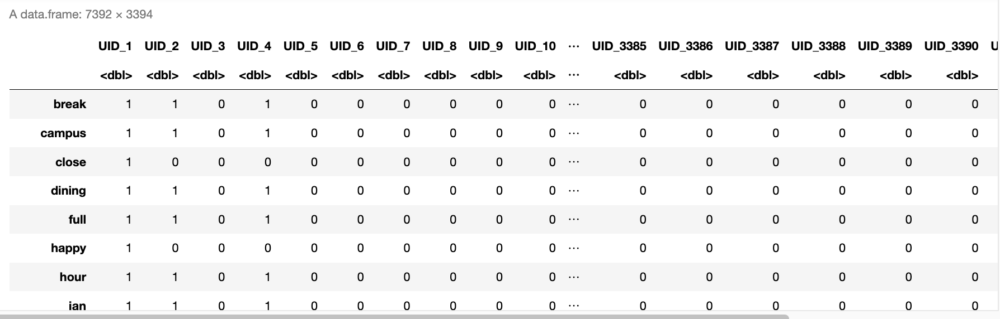
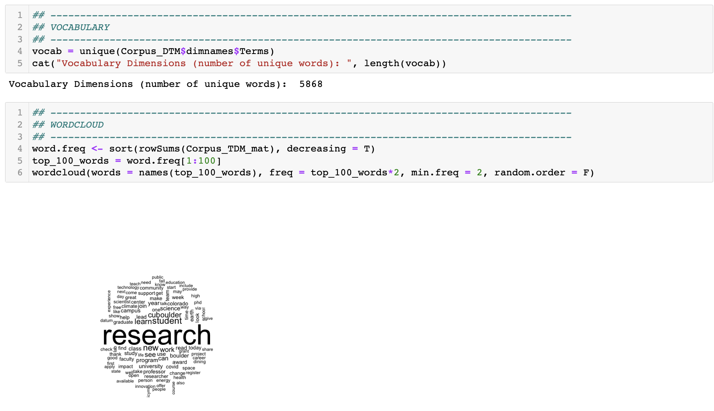
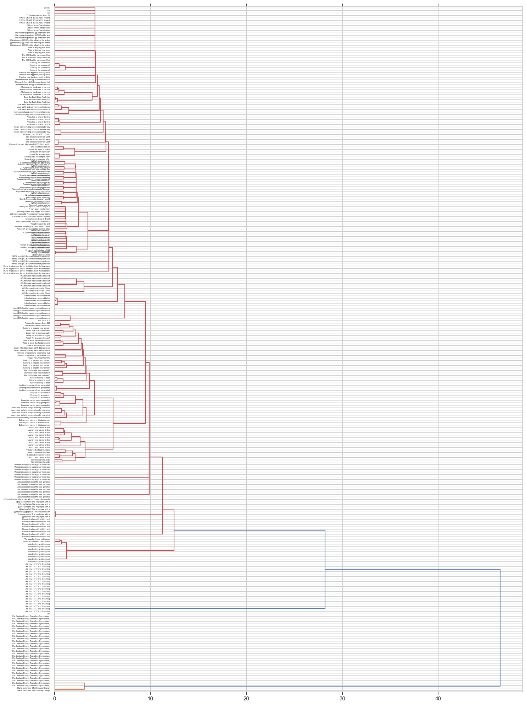
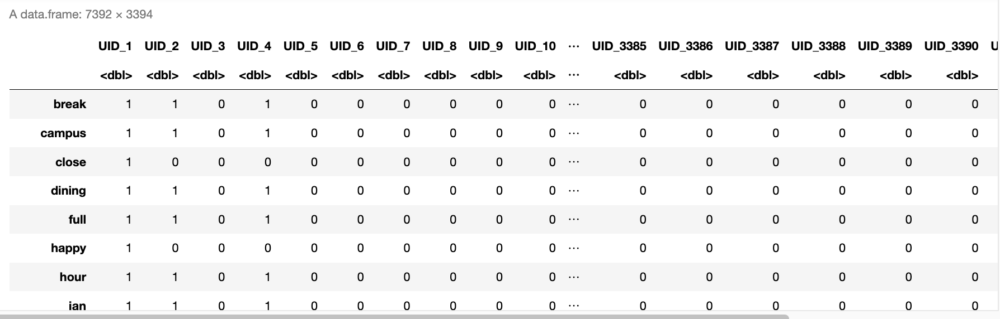
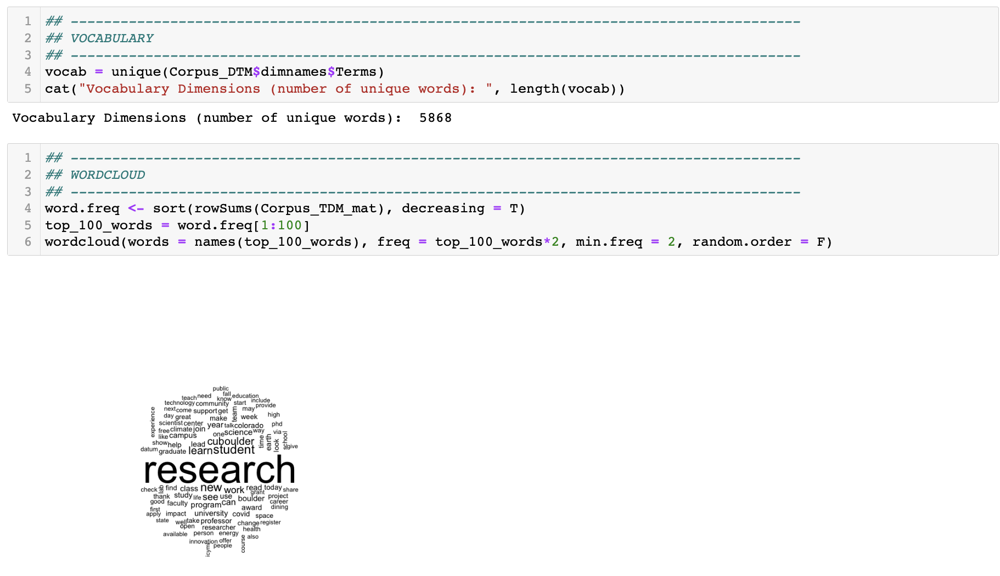
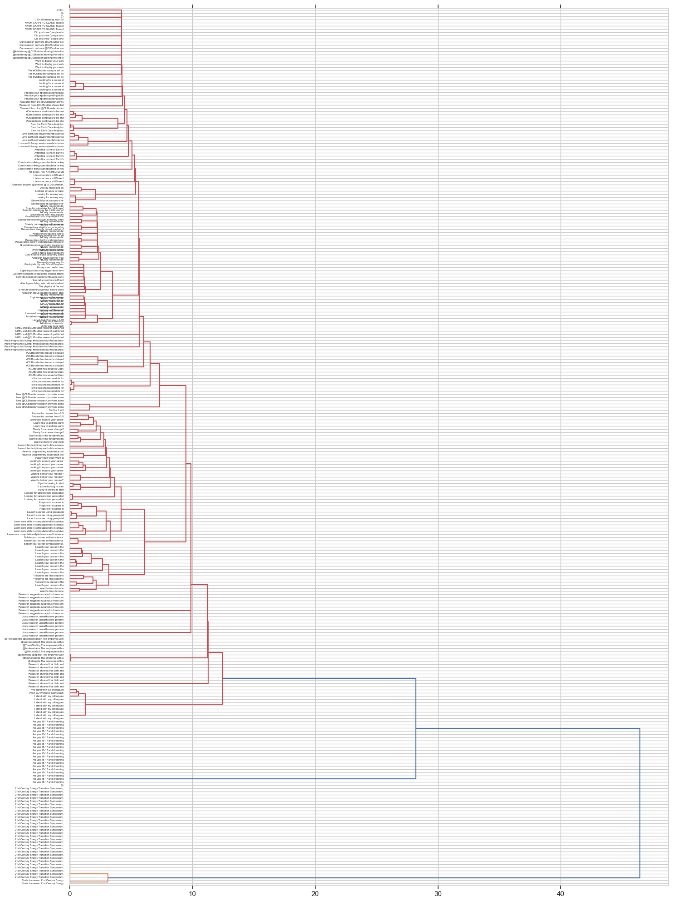
Association Rule Mining
Published
2 Feb 2023
Read Time
15 Mins
Version
1.0
01
OVERVIEW
Association rule mining is a technique used to identify patterns in large data sets. It involves finding relationships between variables in the data and using those relationships to make predictions or decisions. The goal of association rule mining is to uncover rules that describe the relationships between different items in the data set.
Apriori Algorithm
The algorithm was introduced by Mr. R. Agrawal and Mr. R. Srikant in 1994, they called it ‘Apriori’ because it uses prior information, i.e., existing transactions, to find out associations and patterns.
The algorithm aims to prune all the unwanted associations by first identifying the frequent item-sets in the dataset and then uses these frequent item-sets to generate association rules.
Download the transactions data
DOWNLOAD
The code for implementing ARM in R is here
02
process
The preprocessed dataset consisting of cleaned tweets were initially stored in a CSV format.
The CSV data was loaded, tokenized and stored in a 'basket' format for executing ARM algorithms.
Apriori will prune all unwanted supersets where the lift is below a given threshold (support, confidence scores).
NetworkD3 was utilized to create a graph of items (principals) associated with relatable items (members) in a node structure formation.
The initial dataset consisted of unordered set of Rules in LHS:RHS format.
Rules were sorted using the Support measure. The final rules dataset was renamed with SourceName, TargetName, and Weight (representing the Support measure). Here are the top 15 Rule associations sorted on Support.
Rules were sorted using the Lift measure. The final rules dataset was renamed with SourceName, TargetName, and Weight (representing the Support measure). Here are the top 15 Rule associations sorted on Lift.
Rules were sorted using the Confidence measure. The final rules dataset was renamed with SourceName, TargetName, and Weight (representing the Support measure). Here are the top 15 Rule associations sorted on Confidence.
Each node was assigned with an edge with a given weight, which would determine the strength of association with that node.
NetworkD3 edge list and nodeList were formed as a part of generating associations between the SourceName (member) and the TargetName(principal).
Finally, Dice Similarity was computed. The Dice similarity coefficient of two vertices is twice the number of common neighbors divided by the sum of the degrees of the vertices. Method dice calculates the pairwise Dice similarities for some (or all) of the vertices.
Knowledge Graph with associated items could be found here.
To summarize finding rules, only first 100 transactions were considered.
In these, three types of associations were majorly found.
Associations involved with a pincipal (Target) "research" was found to be correctly associated with members such as "student", "phd", science", and some topics.
Associations involved with a pincipal (Target) "dining" was found to be correctly associated with members such as "january", "hour", "today" based on the context of our data.


Decision Trees
Published
2 Feb 2023
Read Time
15 Mins
Version
1.0
01
OVERVIEW
A decision tree is a type of predictive model that maps out possible outcomes and their likelihood based on a series of decision rules. It is a tree-like structure where each internal node represents a decision based on a feature or attribute, and each leaf node represents a class label or a predicted outcome.
Based on Hunt’s algorithm, it could be used for Classification and Regression purposes (CART). The Decision Tree Hunt algorithm is a widely used approach for constructing decision trees. It is a recursive algorithm that starts with the entire dataset and selects the best feature to split the data based on a criterion such as information gain, GINI index, or entropy.
The process of constructing a decision tree involves selecting the best feature or attribute to split the data at each node. There are several criteria for measuring the "goodness" of a split, such as:
- Gini gain (for categorical response)
- Information gain (for categorical response)
- Chi-Squared Test (for categorical response)
- Reduction in Variance (for continuous response)
Gini Gain
The Gini-gain measures the degree of impurity or randomness in a set of examples. A split is considered "good" if it leads to a significant decrease in the GINI impurity. Gini gain is measured by comparing gini impurity of parents and child nodes.
Information Gain
Entropy is another measure of impurity that quantifies the uncertainty in a set of examples. A split is considered "good" if it leads to a significant decrease in the entropy. Information gain is the measure of the expected reduction in entropy achieved by a split.
Chi-Squared Test
Chi-square is another method of splitting nodes in a decision tree for datasets having categorical target values. It is used to make two or more splits in a node. It works on the statistical significance of differences between the parent node and child nodes.
Reduction in Variance
It is a method for splitting the node used when the target variable is continuous, i.e., regression problems. It is called so because it uses variance as a measure for deciding the feature on which a node is split into child nodes. Variance is used for calculating the homogeneity of a node. If a node is entirely homogeneous, then the variance is zero.
It is generally possible to create an infinite number of decision trees because there can be multiple ways to split the data at each node, and the order in which the features are selected, eventually leading each leaf node to be a pure node. Additionally, decision trees can have multiple levels of depth, and the number of possible trees grows exponentially with the number of features and examples in the dataset.
Download the labelled record data
DOWNLOAD
Code for Decision Tress in
Python
02
process
The preprocessed dataset consisting of cleaned tweet analytics stored in a CSV format. There are couple of categorical and continuous features.
Train-test split is a common technique in machine learning that involves dividing the dataset into training and testing sets. The training set is used to train the model, while the testing set is used to evaluate its performance on unseen data. Using scikit-learn's function train_test_split, with a test size of 30% and shuffled dataset, train and test sets were created.
Training Set
Testing Set
It is important to ensure that the training set and testing set are disjoint, meaning that there is no overlap between the two sets, because if there is overlap, the model can learn from the testing set and perform well on it, but it may not generalize well to new and unseen data.
If the model has already seen the testing data during training, its performance on the testing set will not be a reliable indicator of its generalization performance.
Category_encoders and StandardScaler are two commonly used preprocessing techniques in machine learning.
category_encoders and StandardScaler are important preprocessing techniques that can help to convert categorical variables into numerical ones and standardize the numerical variables, respectively, so that they can be used in machine learning models.
By using these techniques, this step aims to convert categorical features to numbers and then scale each of the feature to bring every feature on a similar scale.
Category_encoders are used to encode categorical variables into numerical variables that can be used in machine learning models.
StandardScaler is used to standardize numerical variables by subtracting the mean and dividing by the standard deviation.
In scikit-learn, DecisionTreeClassifier uses either the Gini impurity or the Information Gain (also known as Entropy) criterion to measure the quality of a split in a decision tree.
The Gini impurity is a measure of the probability of misclassifying a randomly chosen element if it were randomly labeled according to the distribution of labels in the node.
The Information Gain, on the other hand, measures the reduction in entropy achieved by splitting a node. Entropy is a measure of the impurity of a set of examples.
For this step, the configuration was chosen after performing GridSearchCV and hyperparameters tuningIn .
Classification accuracy metrics evaluate how well a classification model predicts correct class labels. Common metrics include accuracy, precision, recall, F1-score, and AUC-ROC, and the appropriate metric should be chosen based on the specific problem at hand.
Accuracy: This is the most basic metric that measures the overall proportion of correctly classified examples.
Precision: This metric measures the proportion of true positive predictions out of all the positive predictions made by the model. It is useful in cases where the cost of a false positive is high.
Recall: This metric measures the proportion of true positive predictions out of all the actual positive examples in the dataset. It is useful in cases where the cost of a false negative is high.
F1-score: This is a balanced metric that takes into account both precision and recall. It is the harmonic mean of precision and recall and is useful in cases where both false positives and false negatives are equally important.
Pruning is a technique used in decision trees to reduce overfitting and improve the generalization performance of the model. It involves removing branches from the tree that do not contribute much to the overall performance of the tree.
Pruning for this project was performed by analyzing max depth and comparing different versions of trees.
Final three trees could be found alongside.
Tree 1: with max-depth set at 3 with Gini Impurity
Tree 2: with max-depth set at 4 with Gini Impurity
Tree 3: with max-depth set at 3 with Information Gain
Decision trees would be employed in tweet analytics to classify tweets into various categories based on features such as like count, topic, and retweet count as displayed in this project. Such a classification was carried out for a range of purposes, such as identifying tweets that are positive or negative based on the number of likes and retweets they receive, and if these numerical analytics could help classify these tweets.
Moreover, decision trees were also utilized for prediction purposes, such as predicting the number of retweets a tweet is likely to receive, based on various features, including the time of day the tweet was posted, the number of hashtags used, and the content of the tweet.
Eventually, this tree-structure was implemented to find feature importances, for development of more effective and accurate models.

Naive Bayes: Guassian, Multinomial, Bernoulli
Published
2 Feb 2023
Read Time
15 Mins
Version
1.0
01
OVERVIEW
Naive Bayes is a probabilistic algorithm that is commonly used for classification problems. It is based on Bayes' theorem, which provides a way to calculate the probability of a hypothesis given some evidence.
In Naive Bayes, a naive assumption is assumed that the features are independent given the class label, or the continuous features follow a normal distribution.
Despite this simplification, Naive Bayes can be very effective in many real-world classification tasks, especially when the number of features is large and the training data is limited. Naive Bayes is commonly used in natural language processing tasks, such as spam filtering and sentiment analysis, as well as in other applications such as image recognition and medical diagnosis.
There are three main types of Naive Bayes classifiers:
- Gaussian (for
continuous
features)
- Multinomial (for categorical and longer text)
- Bernoulli (for shorter texts
)
Gaussian Naive Bayes
This version assumes that the features are continuous and normally distributed. It models the distribution of each feature for each class using a Gaussian (normal) distribution.
Multinomial Naive Bayes
This version assumes that the features are discrete and counts or frequencies. It is commonly used for text classification (this project), where each feature corresponds to the frequency of a word in a document.
Bernoulli Naive Bayes
This version is similar to Multinomial Naive Bayes, but it assumes that the features are binary, meaning that each feature is either present or absent in the document. It is commonly used for binary classification problems, such as sentiment analysis or spam filtering.
Multinomial NB is generally used for longer documents/corpus and considers the word frequencies, whereas, Bernoulli NB is mostly used for shorter documents/corpuses and ignores the word count.
In Bernoulli Naive Bayes, the features are binary variables, which means that they can take on one of two values: 0 or 1. The algorithm calculates the probability of each feature being present in a class, and then uses Bayes' theorem to calculate the probability of the data belonging to each class.
The Bernoulli Naive Bayes algorithm is commonly used for text classification, where the features represent the presence or absence of certain words in a document. It is also used in other applications where the features are binary, such as image classification or fraud detection.
Download the labelled record data
DOWNLOAD
Code for Naive Bayes in
Python
02
process
The preprocessed dataset consisting of cleaned and preprocessed tweets stored in a CSV format were used, along with three
labels : cu_research, cu_online, and
cu_others.
The aim is to classify these tweets under one of these classes.
Train-test split is a common technique in machine learning that involves dividing the dataset into training and testing sets. The training set is used to train the model, while the testing set is used to evaluate its performance on unseen data. Using scikit-learn's function train_test_split, with a test size of 30% and shuffled dataset, train and test sets were created.
Training Set
Testing Set
It is important to ensure that the training set and testing set are disjoint, meaning that there is no overlap between the two sets, because if there is overlap, the model can learn from the testing set and perform well on it, but it may not generalize well to new and unseen data.
If the model has already seen the testing data during training, its performance on the testing set will not be a reliable indicator of its generalization performance.
For Naive Bayes classification, vectorization refers to the process of transforming textual data into numerical vectors that can be processed by machine learning algorithms.
Naive Bayes requires numerical input data, so text data must first be transformed into numerical vectors before it can be used with Naive Bayes.
For the scope of this project, Count Vectorizer was used to transform tweets into frequency word vectors. Count Vectorizer is a type of Bag-of-Words model that represents each document as a vector of word frequencies.
By generating a document-term matrix that represents each document as a vector of word frequencies, the tweets were vectorized and used for Naive Bayes algorithm.
Multinomial Naive Bayes is a variant of the Naive Bayes algorithm that is commonly used for text classification. It is specifically designed for text data where the features are typically word frequencies or counts. In Multinomial Naive Bayes, each document is represented as a bag of words or a vector of word counts, and each class is represented by the distribution of word counts or frequencies for that class. The algorithm calculates the probability of a new document belonging to each class using Bayes' theorem and the assumption that the word counts are independent given the class label.
Classification accuracy metrics revealed decent accuracy on predicting test tweets under one of three class labels. Common metrics include accuracy, precision, recall, F1-score, and AUC-ROC, and the appropriate metric should be chosen based on the specific problem at hand.
Accuracy: This is the most basic metric that measures the overall proportion of correctly classified examples.
Precision: This metric measures the proportion of true positive predictions out of all the positive predictions made by the model. It is useful in cases where the cost of a false positive is high.
Recall: This metric measures the proportion of true positive predictions out of all the actual positive examples in the dataset. It is useful in cases where the cost of a false negative is high.
F1-score: This is a balanced metric that takes into account both precision and recall. It is the harmonic mean of precision and recall and is useful in cases where both false positives and false negatives are equally important.
The trained Multinomial Naive Bayes was used to test couple of unseen tweets created on the fly to test model's classification performance. The model seemed to perform decently well, with a precision of 89%, and F1 score of 88%.
The basic idea behind using Naive Bayes for tweet classification was the validity of its assumption, since each tweet was independent of other.
The algorithm estimated the conditional probability of each class (i.e. cu_research, cu_online and cu_others) given the presence or absence of each word in the tweet. The class with the highest probability is then assigned to the tweet.
Following advantages were exploited:
- Handling high-dimensional data: Twitter data had a large number of features (words) and Naive Bayes was quite well-suited.
- Robust to noise: Twitter data was quite noisy, with misspellings, abbreviations, and other non-standard language, and Naive Bayes was robust to such noise, as it estimates the probabilities of each class based on the presence or absence of each feature, rather than relying on the exact wording of each tweet.
- Fast and scalable: Naive Bayes was quite fast to execute and performed very well with decent accuracy.

Support Vector Machines
Published
2 Feb 2023
Read Time
15 Mins
Version
1.0
01
OVERVIEW
Support Vector Machines (SVMs) are supervised learning algorithms that are primarily used for industry wise classification and regression applications. The goal of SVMs is to find the best way to draw a line that separates groups of things as far apart as possible. This line is determined by picking some points that are closest to it, called support vectors, and imagining a decision boundary to separate them in appropriate dimensions.
SVMs are linear separators because they assume that the classes can be separated by a hyperplane. However, when the classes are not separable in the original input space, SVMs utilize kernel functions to map the data points into a higher-dimensional feature space where they can be linearly separated. The choice of kernel function is important as it determines the shape of the decision boundary in the higher-dimensional space, and can be tuned by the Data Scientist.
The kernel is a function that takes two data points as input and produces a similarity score. Dot product is critical to a kernel function because it facilitates the computation of similarirty between two vectors. This is known as the "kernel trick", and it allows SVMs to efficiently compute the decision boundary in the transformed space. The dot product is a natural choice for measuring similarity because it captures the degree of alignment between two vectors.
SVMs Kernels
The choice of kernel function is important as it determines the shape of the decision boundary in the higher-dimensional space. Two common types of kernel functions are the polynomial kernel and the radial basis function (RBF) kernel.
Polynomial Kernel
The polynomial kernel maps the data points into a higher-dimensional space using a polynomial function of degree d, where d is a parameter that controls the degree of nonlinearity. Here's an example, let there be two points A and B in euclidean space, where A = (1, 2) and B = (2, 1), and a polynomial kernel with r=1 and d=2.
K(A,B) --> (ab + r)^d = (AB + 1)^2 = ((a1, a2)(b1, b2) + 1)^2= (a1b1 + a2b2 + 1)^2 = (a1^2b1^2 + 2a1a2b1b2 + a2^2b2^2 + 2a1b1 + 2a2b2 + 1)
A(a1,a2)-> {a1^2, sqrt(2)a1a2, a2^2, sqrt(2)a1, sqrt(2)a2, 1}
A(1, 2) --> {1, sqrt(2)2, 4, sqrt(2), sqrt(2)2, 1}
B(b1,b2) > {b1^2, sqrt(2)b1b2, b2^2, sqrt(2)b1, sqrt(2)b2, 1}
B(2, 1) --> {4, sqrt(2)2, 1, sqrt(2)2, sqrt(2), 1}

Radial Basis Function
The RBF kernel maps the data points into an infinite-dimensional space using a Gaussian function with a parameter r that controls the smoothness of the function.
Download the labelled record data
DOWNLOAD
Code for SVM Classifier in
Python
Linear Regression
Published
2 Feb 2023
Read Time
15 Mins
Version
1.0
01
OVERVIEW
Linear regression is a statistical method used for predictive analysis in machine learning, in order to model the relationship between a dependent variable and one or more independent variables. It is one of the simplest and intuitive regression techniques which has wide applications in data science and statistical analysis. It comes from a family of Generalized Linear Modelling where the response and the residual errors are assumed to have a Gaussian Distribution.
Primarily Linear regression are of two types: (1) Simple Linear Regression and (2) Multiple Linear Regression. In simple linear regression, we try to find the best fit line that can describe the relationship between a dependent variable (aka Response or Target) and one independent variable (aka Predictor or Feature). The equation of the line can be expressed as:
Response (Y) = Intercept + Slope x Feature (X)
The goal of Simple Linear Regression is to find the values of Intercept and Slope terms that minimize the difference between the predicted values and the actual values of the dependent variable. This is achieved by using a cost function such as the mean squared error (MSE), which measures the difference between the predicted values and the actual values, and tries to optimize the cost function on this difference.
Cost function
Cost function is a function that measures how well the model is fitting the training data. The goal of training a linear regression model is to minimize the value of the cost function. The most common cost function used in linear regression is the mean squared error (MSE), which is calculated as the average of the squared difference between the predicted values and the actual values of the dependent variable.
Optimization Algorithms
To optimize the cost function and find the best values of m and b that minimize the MSE, there are several optimization algorithms:
- Ordinary Least Squares
- Maximum Likelihood Estimation
- Generalized Least Squares
- Weighted Least Squares
- Gradient Descent (Iterative approach)
Limitations of Linear Regression
- There is an assumption of a linear relationship between the dependent variable and independent variable, which may not be always true for real-world use cases.
- It is sensitive to outliers, which can affect the performance of the model.
- There is an assumption of normally distributed residual terms or errors and also assumes they have a constant variance, which may not always hold true, especially, if the response is not continuous.
- It can be influenced by the choice of independent variables, which can affect the accuracy of the model.
Download the labelled record data
DOWNLOAD
Code for Linear
Regression in R
Neural Networks
Published
2 Feb 2023
Read Time
15 Mins
Version
1.0
01
OVERVIEW
Neural networks are a type of machine learning model that is inspired by the structure and function of the human brain. They consist of interconnected neurons that process and transmit information, with each neuron receiving input from previous layers and producing output for subsequent layers. The final layer's output is the model's predicted output based on the input it received. Neural networks are commonly used in applications such as image and speech recognition and are particularly useful for complex pattern recognition and relationship detection in large datasets. The neural network is trained by adjusting the connection weights between neurons using backpropagation to minimize the difference between predicted and actual outputs, allowing for high accuracy and generalization.
Neural networks come in different types, including feedforward, recurrent, and convolutional neural networks. Feedforward neural networks are the simplest type, where data is processed in a single direction from input to output. Recurrent neural networks, on the other hand, allow for the processing of sequential data by incorporating feedback loops that enable previous outputs to be fed back as inputs. Convolutional neural networks are specialized for processing image data and utilize convolutional layers to detect features such as edges and shapes. With ongoing advances in machine learning and hardware, neural networks are becoming increasingly sophisticated and capable of tackling even more complex problems.
Types of Neural Networks
Neural networks can be grouped into different categories based on their structure and function. The feedforward neural network is the most basic type, with multiple layers of interconnected neurons that process data from input to output in a single direction. Each neuron in a feedforward neural network is linked to every neuron in the subsequent layer, with the output of each neuron in one layer serving as input for the next. Feedforward neural networks are widely used for tasks such as image classification and speech recognition, and their straightforward architecture makes them easy to train.
Another type of neural network is the recurrent neural network (RNN), which is tailored for sequential data processing, such as time series and natural language. RNNs differ from feedforward neural networks in that they have feedback loops that enable previous outputs to be used as inputs. This feature permits RNNs to capture temporal information and model complex input-output relationships over time. Nonetheless, RNNs can be challenging to train, and they suffer from the vanishing gradient issue that limits their ability to model long-term dependencies. To tackle this problem, specialized types of recurrent networks, such as Long Short-Term Memory (LSTM) and Gated Recurrent Units (GRU), have been developed that employ dedicated neurons to handle long-term dependencies better.
Download the labelled record data
DOWNLOAD
Code for NN Classifier in
Python
Resources
Appendix, Books, Notes and Syllabus.